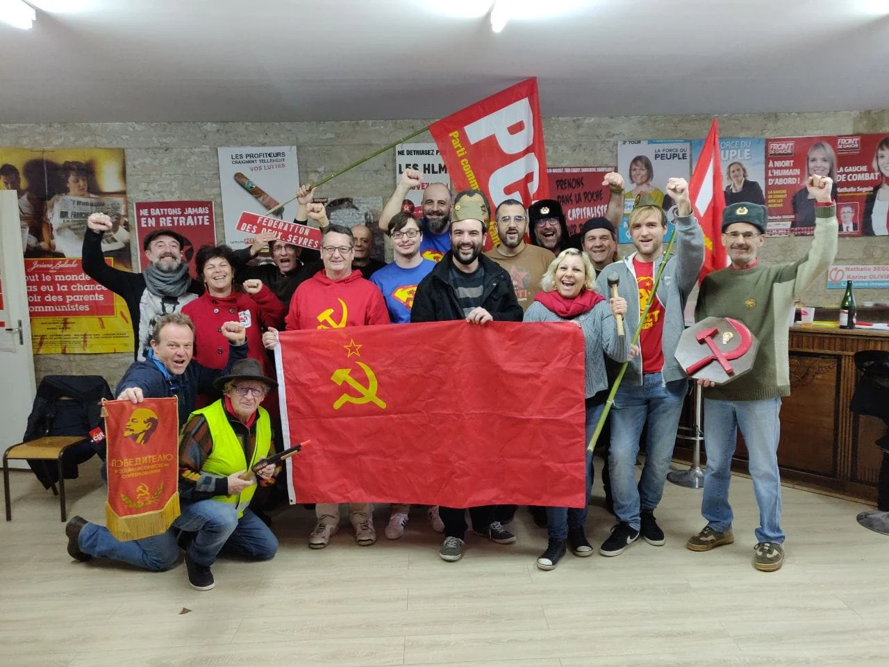

Publication d’archives
Et après une très belle manif de convergence gilets jaunes/gilets rouges, les militants communistes des…
Date indiquée par Facebook · 20 janvier 2019
Texte conservé avec la publication
Contexte du dossier
Au début de 2019, les vœux des communistes deux-sévriens s’accompagnent d’un compte rendu heureux de la rencontre entre gilets jaunes et gilets rouges. Le message du 1er Mai revendique, lui aussi, une journée unitaire. Ces publications brèves ne livrent ni bilan chiffré ni programme détaillé ; elles affirment une pratique : chercher ce qui rassemble les travailleurs et celles et ceux qui contestent leur appauvrissement.
Le 29 février 2020, la page passe à l’urgence et appelle, pour 20 heures place de la Brèche, à un rassemblement contre le 49.3. L’appel atteste le refus d’un passage en force ; il ne suffit pas à établir le déroulement du rendez-vous. Entre ces traces, une continuité demeure : la question sociale porte aussi celle de la place laissée à l’expression collective.

Sources
Archive rouge · export Facebook · AR-0002-FB-02096
À lire aussi · Infâme: à Noël Macron dépouille les chômeurs